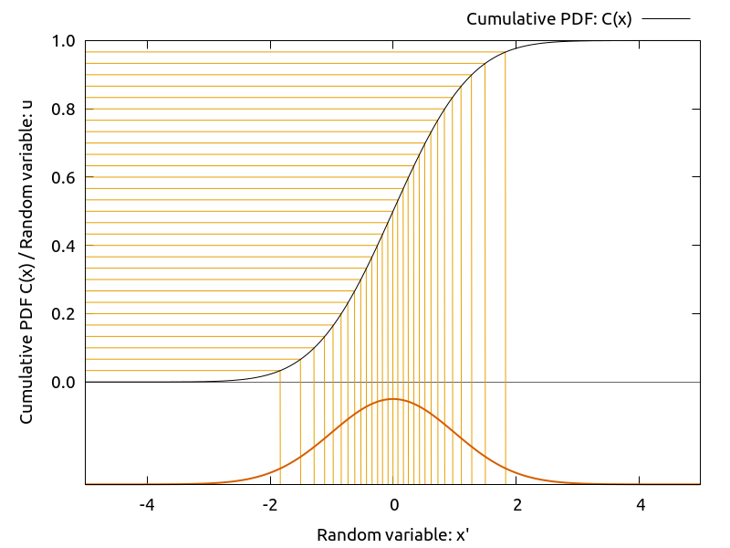

乱数を生成する
ここでは任意の確率分布関数に従う乱数を発生させる方法として, 逆関数法と棄却法という 2 つの方法を紹介します. MCMC の理解にはさほど重要ではないのですが, MCMC と対比させる手法としてここで簡単に触れておきます.
前提/一様乱数を生成する関数
前提として私たちは \([0,1)\) の範囲に一様に分布する乱数を生成できるとします. まず, 何らかの乱数を発生させる能力がないと以下の議論は成立しません.1 Python では以下のようにして乱数生成器を生成することができます.
from numpy.random import default_rng # 乱数生成器
gen = default_rng(2021) # seed 値を与えて初期化する
u = gen.uniform(0,1,size=(5))
print(u)
計算結果
[0.75694783 0.94138187 0.59246304 0.31884171 0.62607384]
散布図を作成して生成された乱数がどんな分布になっているのか確認してみましょう. \([0,1)\) の範囲に一様に分布していることが確認できると思います.
import matplotlib.pyplot as plt
from numpy.random import default_rng
gen = default_rng(2021)
fig = plt.figure()
ax = fig.add_subplot()
ax.plot(gen.uniform(0,1,size=(1000)), ls='', marker='.')
ax.set_ylabel('uniform random value')
ax.set_xlabel('sample number')
plt.tight_layout()
plt.show()
計算結果
numpy にはさまざまな確率分布に従う乱数を生成するための関数が備わっていますが, ここでは一様乱数 uniform() を使って任意の確率分布に従う乱数を生成する方法について紹介します.
乱数生成器をカスタマイズしたい場合
上記のサンプルではデフォルトの乱数生成器を使用しました. 乱数生成器を自分でカスタマイズしたい場合には以下のように Generator() を呼び出してください.
from numpy.random import Generator, PCG64
gen = Generator(PCG64(2021)) # PCG64 に seed 値を与えて初期化する
デフォルトでは PCG64 が使用されますが, もしメルセンヌツイスタを使用したい場合には MT19937 を使用してください.
from numpy.random import Generator, MT19937
gen = Generator(MT19937(2021)) # MT19937 に seed 値を与えて初期化する
逆関数法
逆関数法による乱数生成
逆関数法とは以下の手続きによって乱数を生成する方法です.
- 累積確率分布 \(C(x) = \int P(x') \mathrm{d}x'\) の逆関数 \(C^{-1}(y)\) を用意する.2
- \([0,1)\) の一様分布 \({\operatorname{Unif}}(0,1)\) から \(u\) をサンプルする.
- \({x'} \gets C^{-1}(u)\) によって \({x'}\) を定義する.
累積確率分布 \(C(x)\) は単調増加関数なので常に逆関数を持ちます. \(C(x)\) の range は \([0,1)\) なので, 逆関数 \(C^{-1}(y)\) の domain は \([0,1)\) なので \(u\) を入力として与えると, \(C^{-1}(y)\) の domain 全体に対して一様の密度で入力を与えることになります. ここで \(u\) を \(\mathrm{d}u\) だけ動かしたときに \({x'}\) がどれだけ動くかを考えると,
となります. \(u\) ⇉ \({x'}\) の変換で \(\mathrm{d}u\) の幅に一様に分布していたデータは \(\mathrm{d}{x'} = P({x'})^{-1}\mathrm{d}u\) の範囲に分布することになるので, \({x'}\) の空間では密度は \(P({x'})\) 倍になります. これによって, 上記の変換によって得られた乱数 \(x'\) の分布はは確率分布関数 \(P(x)\) に従います.
逆関数法の概念図を以下に示します. 累積確率分布 \(C(x)\) を黒実線で示しました. ここで \([0,1)\) の範囲で一様に値をサンプルして, その値を高さにもち \(x\) 軸と並行にな線 (黄色) を引きます. ここでは線を 30 本引いています. 線が \(C(x)\) とぶつかったところで \(x\) 軸に落とします. この操作は \(u\) ⇉ \({x'}\) の変換に相当しています. 確率分布 \(P(x)\) の値が大きいところでは \(C(x)\) の傾きが大きくなるため, \(x\) 軸上では黄色い線の密度が高くなっていることが分かります.

指数分布に従う乱数
逆関数法を使って指数分布に従う乱数を生成してみましょう. 指数分布とは \(x \geq 0\) で定義される確率分布で, 減衰の速さを示すパラメタを 1 つ持ちます.
累積確率分布は \(C(x;\lambda) = 1-\exp(-{\lambda}x)\) となるので, 一様分布から生成した乱数 \(u\) をつかって以下の変換をすることで指数分布に従う乱数を生成することができます.
以下のサンプルでは一様乱数 \(u\) を 1000 個生成して, \(\lambda = 3\) の指数分布に従う乱数に変換しています. 生成した乱数のヒストグラムと確率分布 \(P(x;\lambda)\) を同じ図にプロットして相違がないことを確認しています.
import matplotlib.pyplot as plt
from numpy.random import default_rng
import numpy as np
gen = default_rng(2021)
lam = 3.0
X = np.linspace(0,5,100)
Y = lam*np.exp(-lam*X)
u = gen.uniform(0,1,size=(10000))
x = -1.0/lam*np.log(1.0-u)
fig = plt.figure()
ax = fig.add_subplot()
ax.hist(x, bins=50, density=True)
ax.plot(X,Y)
ax.set_ylabel('frequency')
ax.set_xlabel('variable: x')
plt.tight_layout()
plt.show()
計算結果
正規分布に従う乱数 — Box-Muller 変換
もうひとつ, 逆関数法のサンプルとして平均が 0 で分散が 1 の標準正規分布 \(\mathcal{N}(0,1)\) を導出します. 標準正規分布は累積確率分布を陽に計算することはできないため, 逆関数法を単純に当てはめることができません. しかし, Box-Muller 変換という手法を使うことで一様分布に従う 2 つの乱数から 2 つの独立した標準正規分布からなる確率変数 \(x\), \(y\) を得ることができます.
まずは, \(x\), \(y\) の同時確率分布 \(P(x,y)\) を考えます.
ここで, \(x = r\cos\theta\), \(y = r\sin\theta\) とおいて極座標系に変換してから累積確率分布を考えます. ただし, 確率は \(\theta\) には依存しないため \([0,2\pi)\) に一様に分布していると考えてよさそうです. 問題を簡単にするために \(\theta\) は積分して消してしまって, \(r\) に対する累積確率分布を考えます.
これで先ほどと同様に逆関数法を使うことができます. \([0,1)\) の一様分布に従う乱数 \(u\), \(v\) を使って \(r\), \(\theta\) に変換します. さらに \(r\), \(\theta\) を直行座標での値に変換することで, 正規分布に従う確率変数 \(x\), \(y\) を得ることができます.
以下のサンプルでは一様分布から Box-Muller 変換によってサンプルした \(x\) のヒストグラムと標準正規分布の確率分布関数を同じ図にプロットして相違がないことを確認しています.
import matplotlib.pyplot as plt
from numpy.random import default_rng
import numpy as np
gen = default_rng(2021)
X = np.linspace(-5,5,500)
Y = np.exp(-X*X/2.0)/np.sqrt(2*np.pi)
u = gen.uniform(0,1,size=(30000))
v = gen.uniform(0,1,size=(30000))
r = np.sqrt(-2*np.log(1-u))
t = 2*np.pi*v
x = r*np.cos(t)
y = r*np.sin(t)
fig = plt.figure()
ax = fig.add_subplot()
ax.hist(x, bins=50, density=True)
ax.plot(X,Y)
ax.set_ylabel('frequency')
ax.set_xlabel('variable: x')
plt.tight_layout()
plt.show()
計算結果
逆関数法は特定の確率分布に従う乱数を生成する方法として極めて強力です. しかしながら, 逆関数法を適用するためには累積確率分布の逆関数を効率よく計算できるという条件を満たす必要があります. 限られたクラスの確率分布にしか適用することはできません.
棄却法
棄却法による乱数生成
棄却法は極めてシンプルな手続きによって乱数を生成する方法です. 例えば以下のような手続きによって生成することができます.
- 一様分布から候補 \(x\) をサンプルする.
- \([0,\alpha)\) の一様分布 \({\operatorname{Unif}}(0,\alpha)\) から \(u\) をサンプルする.3
- \(u \leq P(x)\) であれば \(x\) を採用する. そうでなければ \(x\) を棄却する.
- 必要なサンプル数が揃うまで上記の手続きを繰り返す.
\(P(x)\) の値に応じて採用される確率が高くなるため, 必然的に \(P(x)\) に従う乱数を得ることができます. \(P(x)\) の値を評価することができれば適用することができるため, ほぼ任意の形状の確率分布に対して使うことができます.
また, この手続きでは確率変数 \(x\), \(x'\) が採用される確率の比 \(P(x)/P(x')\) によって \(x\) が従う確率分布の形状が決まります. そのため, 確率分布関数の形状はわかっているが規格化定数がわからない4というケースでも適用することができます.
以下のサンプルでは確率分布 \(P(x) \propto \sqrt{1-x^2}\) に従う乱数を棄却法によって生成しています. 生成した乱数のヒストグラムが確率分布と相違がないことを確認しています. また合計で 30000 件のデータを生成するために合計で何回上記の手続きを繰り返したのかを表示します.
import matplotlib.pyplot as plt
from numpy.random import default_rng
import numpy as np
gen = default_rng(2021)
func = lambda x: np.sqrt(np.clip(1-x*x,0,1))/np.pi*2.0
X = np.linspace(-1.2,1.2,500)
Y = func(X)
trial = 0
x = []
while len(x)<30000:
u = gen.uniform(-2,2)
v = gen.uniform(0,2.0/np.pi)
if v<func(u):
x.append(u)
trial += 1
x = np.array(x)
print(f'total trial: {trial}')
fig = plt.figure()
ax = fig.add_subplot()
ax.hist(x, bins=50, density=True)
ax.plot(X,Y)
ax.set_ylabel('frequency')
ax.set_xlabel('variable: x')
plt.tight_layout()
plt.show()
計算結果
total trial: 76247
提案分布による効率化
上記の手続きでは \(x\) を一様な分布からサンプルしていました. ここで, 最初に \(x\) を抽出する分布のことを提案分布と呼びます. 提案分布は一様分布である必要はありません. 提案分布として \(P(x)\) に近い分布を用いることで, サンプリングを効率化する (棄却率を下げる) ことができます. 提案分布として \(Q(x)\) をもちいた場合の手続きを以下に示します.5
- 提案分布 \(Q(x)\) から候補 \(x\) をサンプルする.6
- \([0,\alpha)\) の一様分布 \({\operatorname{Unif}}(0,\alpha)\) から \(u\) をサンプルする.7
- \(u \leq P(x)/Q(x)\) であれば \(x\) を採用する. そうでなければ \(x\) を棄却する.
- 必要なサンプル数が揃うまで上記の手続きを繰り返す.
以下のサンプルでは標準正規分布を提案分布として採用した確率分布 \(P(x) \propto \sqrt{1-x^2}\) に従う乱数を棄却法によって生成しています. 生成した乱数のヒストグラムが求める確率分布と相違ないことを確認しています. また合計で 30000 件のデータを生成するために合計で何回上記の手続きを繰り返したのかを表示します.
import matplotlib.pyplot as plt
from numpy.random import default_rng
import numpy as np
gen = default_rng(2021)
func = lambda x: np.sqrt(np.clip(1-x*x,0,1))/np.pi*2.0
prop = lambda x: np.exp(-x*x/2.0)/np.sqrt(2.0*np.pi)
X = np.linspace(-1.2,1.2,500)
Y = func(X)
trial = 0
x = []
while len(x)<30000:
u = gen.normal(0,1)
v = gen.uniform(0,np.sqrt(8/np.pi))
if v<func(u)/prop(u):
x.append(u)
trial += 1
x = np.array(x)
print(f'total trial: {trial}')
fig = plt.figure()
ax = fig.add_subplot()
ax.hist(x, bins=50, density=True)
ax.plot(X,Y)
ax.set_ylabel('frequency')
ax.set_xlabel('variable: x')
plt.tight_layout()
plt.show()
計算結果
total trial: 47650

目的とする分布に近い分布を提案分布として用いることによって, 効率的にサンプリングできていることが分かります.
棄却法の弱点
棄却法はシンプルであり幅広いクラスの問題に対して適用することができます. 一方で, 確率分布が局所的に高い値を持つ場合には, 棄却率が高くなってしまい, 効率的にサンプルすることができくなる可能性があります.
以下のサンプルでは \(x \in [0,10)\) で定義された \(\lambda = 3\) の指数分布に対して \(\alpha = \lambda\) として棄却法を試してみます. 10000 回繰り返したときに棄却された割合を計算してみます.
from numpy.random import default_rng
import numpy as np
gen = default_rng(2021)
lam = 3.0
ub = 10.0
func = lambda x: lam*np.exp(-lam*x)/(1.0-np.exp(-lam*ub))
x = gen.uniform(0,ub, size=(10000))
a = gen.uniform(0,lam, size=(10000))
rejected = a > func(x)
print('rejected fraction: {}'.format(rejected.sum()/rejected.size))
計算結果
rejected fraction: 0.9693
今回のケースではおよそ 96% の試行が reject されました. 望んだ数だけ乱数を得るためにおよそ 30 倍以上の試行を費やさなければならないことになります. 棄却法は実装しやすく, 適用範囲の広い方法ではあるのですが, 問題によっては必ずしも効率の良い方法とは言えません.
-
もちろん計算機によって生成される乱数は擬似乱数でしかないのですが, ここでは考えないことにしましょう. ↩
-
一般に累積確率分布を \(C(x)\), 確率分布を \(P(x)\) で表すことにします. ↩
-
ただし \(\alpha \geq \max\limits_x P(x)\) とします. ↩
-
確率を Bayes 的に評価しようとするとこのケースには頻繁に遭遇します. 特に多次元の量を扱っている場合には, 規格化するために多次元空間での積分が必要になるため「2 点の確率の比」さえ分かれば適用できる手法はとても有用です (そして今回 MCMC で用いる Metropolis-Hasting 法もこのケースに該当します). ↩
-
ここでは例外的に確率分布関数に \(Q(x)\) という表現を使っています. 実態を反映しているわけではないが \(P(x)\) を近似するために使いやすい関数として採用しています. ↩
-
ここで \(P(x) > 0\) であるような \(x\) については必ず \(Q(x) > 0\) であるような \(Q(x)\) を選ぶ必要があります. 提案されることのない領域は決してサンプルに現れません. ↩
-
ただし \(\alpha \geq \max\limits_x {P(x)}/{Q(x)}\) とします. ↩